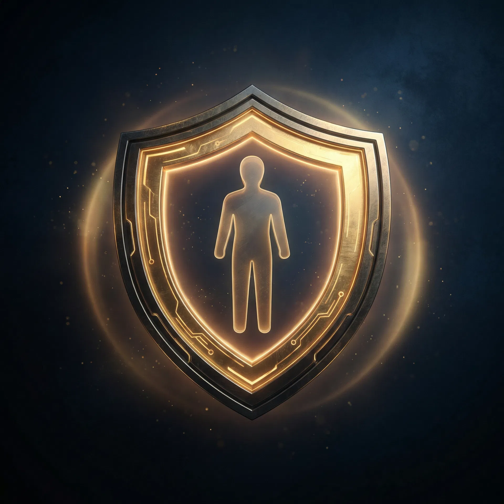
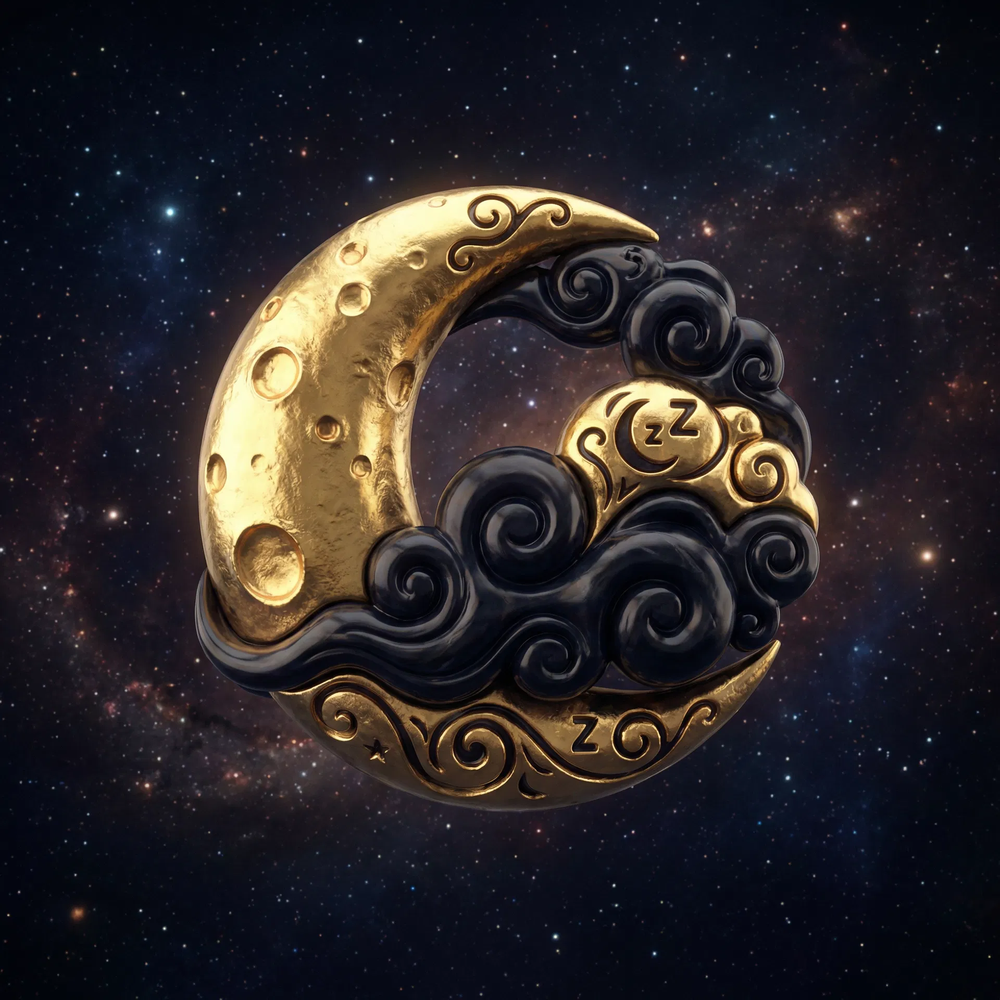

Descubra como uma alteração invisível no padrão musical mundial está drenando sua energia, bloqueando sua prosperidade e mantendo você ansioso. E como reverter isso em 7 minutos.
Clique para assistir
Desde 1953, toda música que você ouve está calibrada em 440Hz — uma frequência artificial que mantém você em alerta permanente. Ansiedade. Cansaço. Névoa mental.
Uma população ansiosa não questiona. Eles não precisam de correntes. Precisam de frequências.
Acesso Imediato ao Portal Secreto

A FREQUÊNCIA DA TERRA
Anula a ansiedade e o medo que 440Hz planta no seu sistema nervoso. Ressoa com a vibração original da Terra. É o campo de força que te desconecta do ruído deles.
REPARO CELULAR
A frequência do reparo. Quando o cansaço não passa com sono e o corpo pede socorro. Reparação de DNA e alívio físico real.
PRODUTIVIDADE EXTREMA
Produtividade extrema e clareza mental. Quando a névoa não sai e você não consegue render. 7 minutos e o cérebro religa.

DESLIGAMENTO TOTAL
Desliga os pensamentos acelerados. Dormir volta a ser reparação, não luta. Induz sono REM profundo.
ATIVAÇÃO PINEAL
A frequência mais alta do Solfeggio. Ativa a glândula pineal — o órgão que eles calcificam com flúor e radiação. Prosperidade e intuição.
ACESSO IMEDIATO AO PROTOCOLO COMPLETO
ACESSO VITALÍCIO | ENTREGA IMEDIATA | PAGAMENTO SEGURO
Não é mágica. É física. Quando você vibra na frequência certa, a ansiedade solta, o foco volta, o corpo repara. Eles mudaram a frequência em 1953 pra te manter fraco. Você muda de volta em 7 minutos.